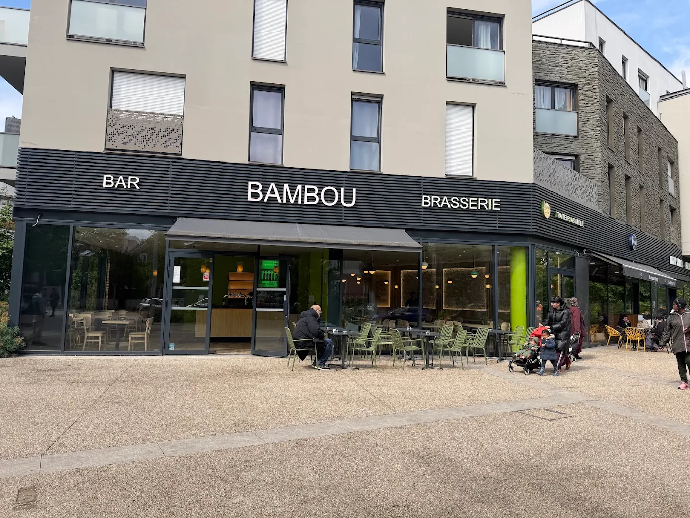
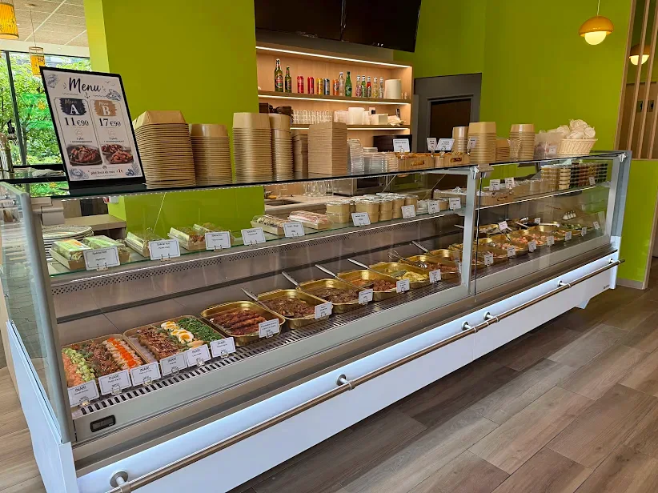
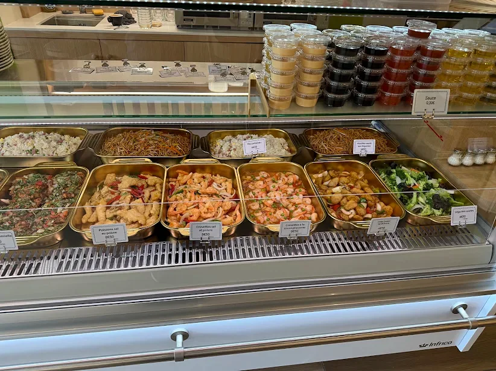
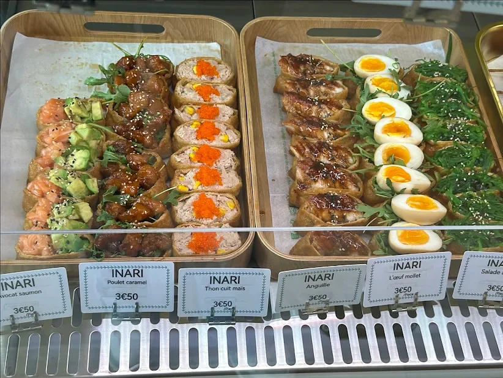

Bienvenue chez Zhu
Une façade noire, un pilier vert bambou, une terrasse sur la place : voici le Bambou, à Nanterre.
Le lieu
Un restaurant de quartier
Le Bambou se trouve au pied d'un immeuble, au 35 boulevard du Général Leclerc, sur une place piétonne au calme. Trois enseignes sur la façade résument tout : Bar · Bambou · Brasserie.


Une salle claire, des touches de vert bambou, une terrasse ouverte sur la place : ici, on vient comme chez soi.
- Terrassesur la place piétonne
- Grande sallelumineuse et conviviale
- Comptoirpressions et boissons
- Ouverturelun – sam, 10h – 20h20

Au comptoir
La vitrine du traiteur
En entrant, vous découvrez notre grande vitrine : les plats du jour y sont présentés, prêts à être servis.
- En haut : les bouchées à la pièce (raviolis vapeur, gyoza, nems, tempura, brochettes) et les sauces.
- En bas : les plats chauds (poulet caramel, poulet citronnelle, crevettes, poisson sel et poivre), le riz cantonais, les nouilles et les légumes.
Montrez ce qui vous fait envie : on vous sert sur place ou dans une barquette à emporter. Les prix sont affichés sur chaque étiquette.
Les prix en vitrine (sur place et à emporter) peuvent être différents de ceux de Deliveroo.

Notre cuisine
Le meilleur de l'Asie
Notre carte réunit plusieurs cuisines d'Asie :
- Chinoise : poulet caramel, bœuf aux oignons, riz cantonais, nouilles sautées.
- Japonaise : sushis, california, inari, gyoza, tempura.
- Vietnamienne et thaïe : nems, rouleaux de printemps, bobun, poulet thaï piquant.
Les plats chauds sont sautés au wok à la commande : à feu très vif, en quelques minutes, pour que les légumes restent croquants et les sauces brillantes.

Côté sushis
Inari & rolls signature
Notre spécialité : les inari, ces petits sachets de tofu frit garnis de riz, déclinés en six saveurs (saumon avocat, poulet caramel, anguille, algues, thon maïs, saumon fromage).
Et nos special rolls, généreusement garnis et couverts de toppings croustillants : tempura crevette, végétarien, thon saumon fumé, poulet croustillant.
Voir les inariCe qui compte pour nous
Nos engagements
Halal
Nos hors-d'œuvre et nos plats chauds sont préparés avec des viandes halal. C'est indiqué sur chaque plat concerné.
Préparé minute
Rien n'attend : chaque commande est préparée au moment où vous la passez.
Options végétariennes
Roll végétarien, légumes sautés, salades, nouilles : repérez la pastille verte.
Prix doux
Plats chauds à 9,90 €, inari à 5 €, menus complets dès 15,90 €.
En images
Un aperçu de nos plats
Cliquez sur une photo pour voir le plat, sa description et son prix.
Envie de goûter ?
Commandez en livraison ou venez nous voir sur place.